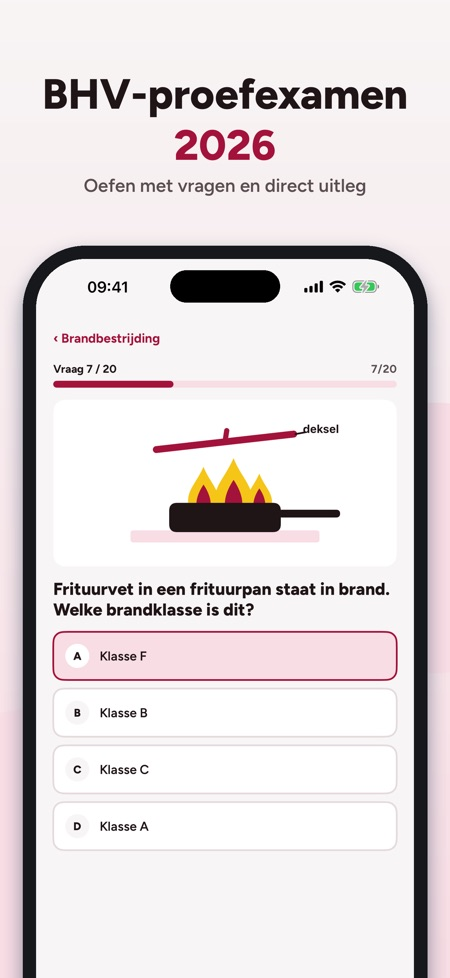
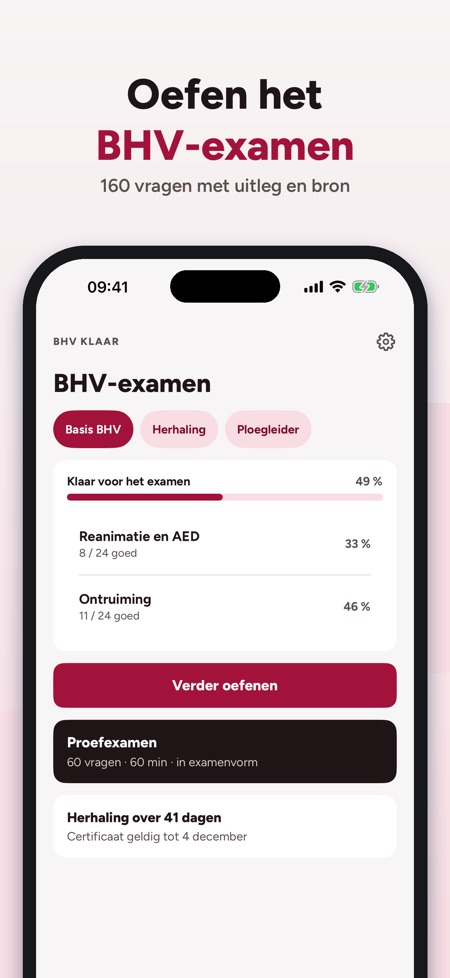
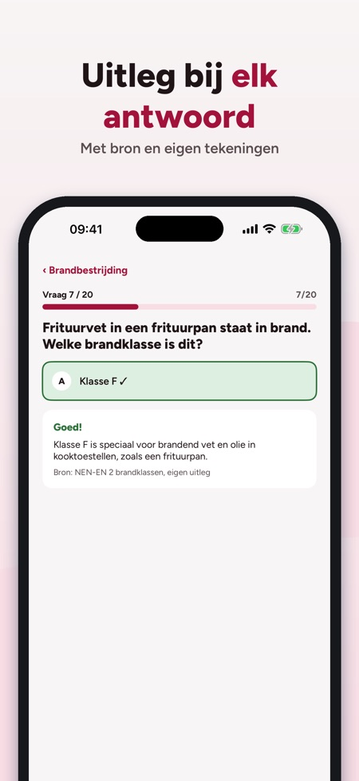

BHV Klaar helpt je oefenen voor het BHV-examen en de jaarlijkse herhaling: brand, ontruiming, eerste hulp, AED en reanimatie met uitleg bij elk antwoord.



Brand, ontruiming, eerste hulp en reanimatie, met vragen per onderwerp, proefexamens en een begrippenlijst.
Ja, een proefexamen in examenvorm met tijd. De volledige versie ontgrendelt alle proefexamens.
Ja, de app is bedoeld voor het BHV-examen en de jaarlijkse herhaling, met een aftelling en herinnering voor je certificaat.
Ja, de app werkt zonder internet.
Nee. De volledige versie is een eenmalige aankoop die alle vragen, proefexamens en statistiek ontgrendelt.
Je kunt 20 vragen, de begrippenlijst en de checklist zonder aankoop gebruiken.
Nee. Het certificaat haal je bij je cursus. De app is onafhankelijk en niet verbonden aan het NIBHV, een opleider of de overheid.
BHV Klaar helpt je oefenen voor het BHV-examen en de jaarlijkse herhaling – brand, ontruiming, eerste hulp en reanimatie met uitleg.
Je kunt 20 vragen, de begrippenlijst en de checklist zonder aankoop gebruiken. De volledige versie is een eenmalige aankoop die alle vragen, proefexamens en statistiek ontgrendelt. Geen abonnement.
BHV Klaar is onafhankelijk en niet verbonden aan het NIBHV, een opleider of de overheid. Je certificaat haal je bij je cursus.